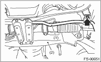
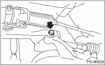

1. Disconnect the ground cable from the battery.
2. Lift-up the vehicle, and remove the front wheels.
3. Disconnect the connector of the front vehicle height sensor. (HID model, right side only)

4. Remove the nuts that hold the front transverse link and the front vehicle height sensor bracket. (HID model, right side only)

5. Remove bolt (A) and clip (B) fixing the front crossmember and the front vehicle height sensor bracket, then remove the front vehicle height sensor assembly. (HID model, right side only)

6. Remove the sub frame. 
7. Remove the stabilizer and jack-up plate.

|
(1) |
Front stabilizer |
|
(2) |
Front crossmember |
8. Disconnect the tie-rod end from the housing.
9. Remove the front exhaust pipe.
10. Remove the front transverse link from the front crossmember and body.

11. Remove the bolts attaching the engine mount cushion rubber to crossmember.
12. Remove the steering universal joint.
13. Disconnect the power steering pipe from steering gearbox.
14. Lift the engine approx. 10 mm (0.39 in) using a chain block.
15. Support the crossmember with a jack, remove the nuts securing the crossmember to body and lower the crossmember gradually along with the steering gearbox.
CAUTION:
When pulling the crossmember downward to remove, be careful that the tie-rod end does not interfere with SFJ boot.